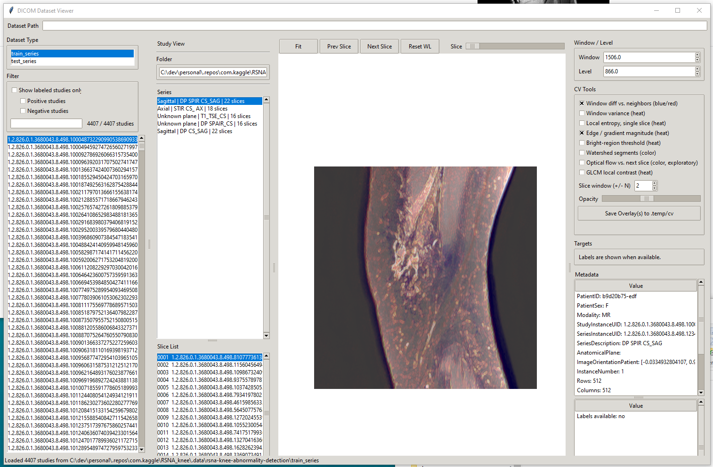

Gemini 3.1 Flash-Lite, PV1 prompt, raw-MRI collage, 384px tiles. The fourth series is the arithmetic mean of the three independently recorded target probabilities.
ROC and AUC, in plain language
ROC means receiver operating characteristic. It is a curve that shows what happens as the probability cutoff changes: the vertical axis is the share of real positive cases correctly ranked above the cutoff (true-positive rate), and the horizontal axis is the share of real negative cases incorrectly placed above it (false-positive rate).
AUC means area under that ROC curve. It summarizes ranking quality across every possible cutoff: 0.5 means chance-level ranking and 1.0 means perfect ranking. This experiment's three recorded runs were 0.9181 (91.81%), 0.9059 (90.59%), and 0.9152 (91.52%); their probability average was 0.9258 (92.58%). These are ROC AUC values, not percent-correct diagnostic accuracy.
ROC AUC matters here because the competition scores continuous probabilities, not a single YES/NO threshold. This report macro-averages the 12 target AUCs so each target has equal weight. Google's ROC and AUC explainer.
Scope: This is a 16-study Calibration-cohort result, not sealed evaluation, a Kaggle leaderboard score, clinical validation, or MRI-only test-time pipeline. The prompt included training radiologist report text, which is unavailable at competition test time. “0.9258” is macro ROC AUC, not 92% accuracy.
Empirical macro-average ROC curves
The dashed diagonal is chance ranking. Filled areas below are empirical macro-average ROC curves: each is formed by interpolating its 12 actual per-target ROC curves on their observed false-positive-rate knots, then averaging. The reported score is the mean of the 12 target AUCs. Click a legend item to show or hide that series in every ROC chart.
3. Empirical ROC curves by target
Every point below is recomputed from retained per-study probabilities and gold labels. Targets with only 3–10 positives in this small cohort have wide uncertainty; these panels describe this cohort only.
4. How the experiment got here
A compact record of the decisions that changed the experiment. Only the middle phase is a matched Gemini comparison; the foundation and earlier-series material provide context.

CV-tools viewer used to explore window-difference and related overlays. This is development context, not performance evidence.
Phase 1 — Make the representation measurable
Earlier per-slice work: MedGemma-4B 0.538 → 0.594; MedGemma-27B 0.800 → 0.792. Different architectures, so context only.
Built a collage, CV-overlay version, and matched plain-grayscale control.
At 16-study scale, early thresholded verdicts were identical: 154/192 (80.2%) for CV and raw MRI.
Replaced failing forced-JSON output with a validated per-target probability table.
Phase 2 — Matched Gemini experiments
224px: PV1 + CV 0.9094; PV1 + raw 0.9019.
224px: PV3 + CV 0.9048; PV3 + raw 0.8886.
384px: raw improved to 0.9181; CV declined to 0.8919.
The four 224px conditions retain their measured per-target ROC arrays; the 384px raw result became the best single run.
Phase 3 — Challenge the winning configuration
768px tiles: 0.9156. Six slices per series: 0.9156. Neither beat raw 384px.
Separate images: 0.8879 at about six times the input-token cost.
Three raw-384px runs: 0.9181, 0.9059, 0.9152—real call-to-call variation.
Probability average: 0.9258 macro ROC AUC, the selected calibration-cohort result.
5. Earlier individual and reference results
These are retained historical results, included to show the learning path. They are not plotted with the four empirical Gemini curves above because their architecture, prompt, image representation, output coverage, and/or scoring path differ. All values below are macro ROC AUC, not accuracy.
Series
Recorded AUC
What it tested
Why it is context, not a direct comparison
MedGemma-4B, per-slice
0.538 → 0.594
Per-slice prompting improved coverage from about 19% to about 50%.
Different local model, per-slice architecture, and incomplete output coverage.
MedGemma-27B, per-slice
0.800 → 0.792
Per-slice prompting reached 100% coverage but did not improve macro AUC.
Different local model and per-slice architecture.
MedGemma-27B, local collage
0.7871
Best recorded local-model configuration in the collage line.
Different model and serving path from Gemini.
Y / external reference
0.8719
External bundle reference on the same 16-study gold cohort.
Underlying model was unconfirmed (the record notes a Claude Opus default); approximately 73% answer coverage, so missing outputs affect direct comparison.
Z / mameen project review
0.9039
GPT-5.6 Sol with collage prompting; the previous strongest recorded project reference.
Different prompt and pipeline; per-target answer coverage varied (about 94% overall), so it is not a matched prompt comparison.
Different architecture; archival analysis found a score-aggregation failure that over-called positives, so this records a lesson rather than a comparable model result.
6. Historical A/B/Z: per-target ROC AUC
Copied into this standalone report from the retained A/B/Z comparison. A and B used the same CV-collage, report-text, and per-target-guidance prompt; only the model differed. Z used a different GPT-5.6 Sol / mameen prompt and pipeline, and its per-target answer coverage varied. It is included as a historical reference—not a matched three-way model ranking. Click a legend item to show or hide a series.